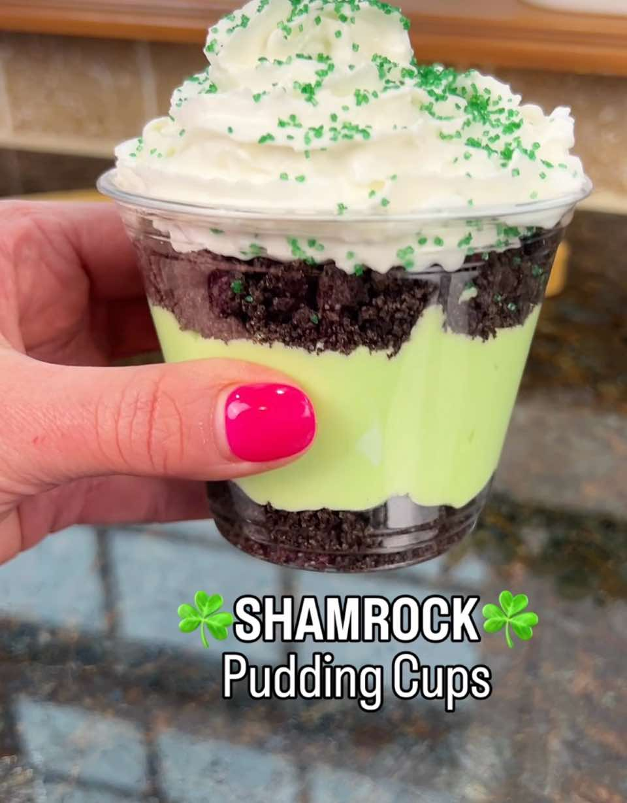

Shamrock Pudding Cups Recipe
Servings6–8 cups
PrepPT0S
CookPT0S

Ingredients
- Pudding Layer
- 1 box (3.4 oz) instant vanilla pudding mix
- 2 cups cold milk
- 1/2 tsp mint extract (or peppermint extract)
- 3–5 drops green food coloring
- Cookie Layers
- 16–20 Oreo cookies, crushed
- Topping
- 1–2 cups whipped cream or Cool Whip
- Green sanding sugar or sprinkles
- Optional Upgrades (make them even better)
- Shamrock Shake flavor
- Replace vanilla pudding with white chocolate pudding
- Add 1 tbsp cream cheese when mixing.
- Extra crunch
- Add thin mint cookies or mint Oreos instead of regular Oreos.
- Fancy presentation
- Top with:
- mini chocolate chips
- Andes mint pieces
- a small chocolate shamrock.
Directions
- Make the pudding
- In a bowl, whisk together:
- pudding mix
- cold milk
- Mix for about 2 minutes until thick.
- Stir in:
- mint extract
- green food coloring
- Chill 5–10 minutes so it firms up.
- Crush the Oreos
- Place Oreos in a zip bag.
- Crush with a rolling pin until they look like crumbly dirt.
- You can include the filling—it helps them stick together.
- Layer the cups
- In small clear cups:
- Oreo crumbs (bottom layer)
- Green mint pudding
- Another Oreo crumb layer
- Repeat if the cup is tall.
- Add the topping
- Pipe or spoon whipped cream on top.
- Sprinkle with green sanding sugar.
This page includes Schema.org Recipe structured data for recipe importers.